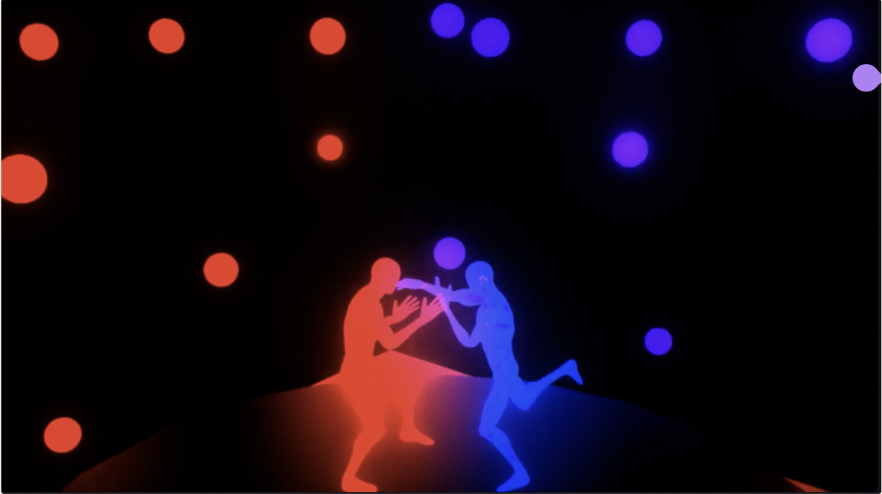
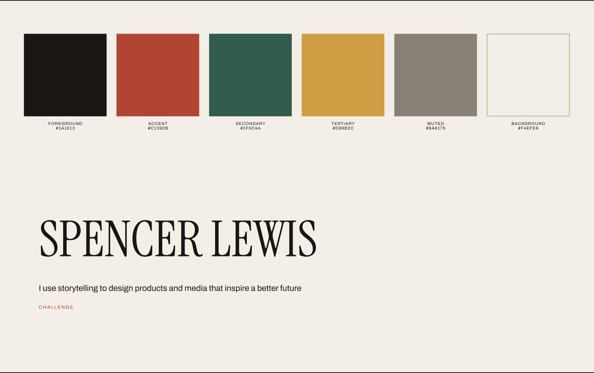
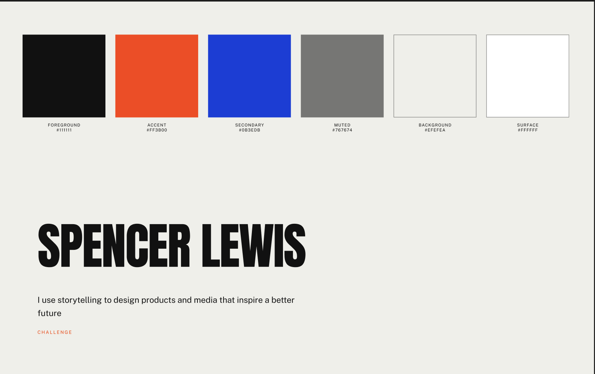
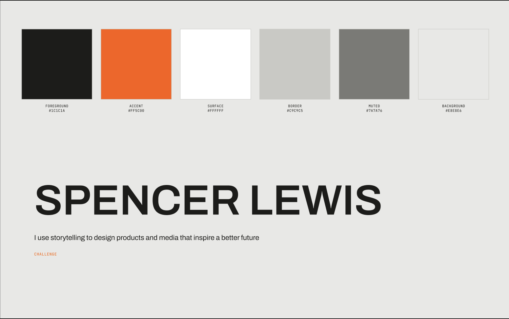
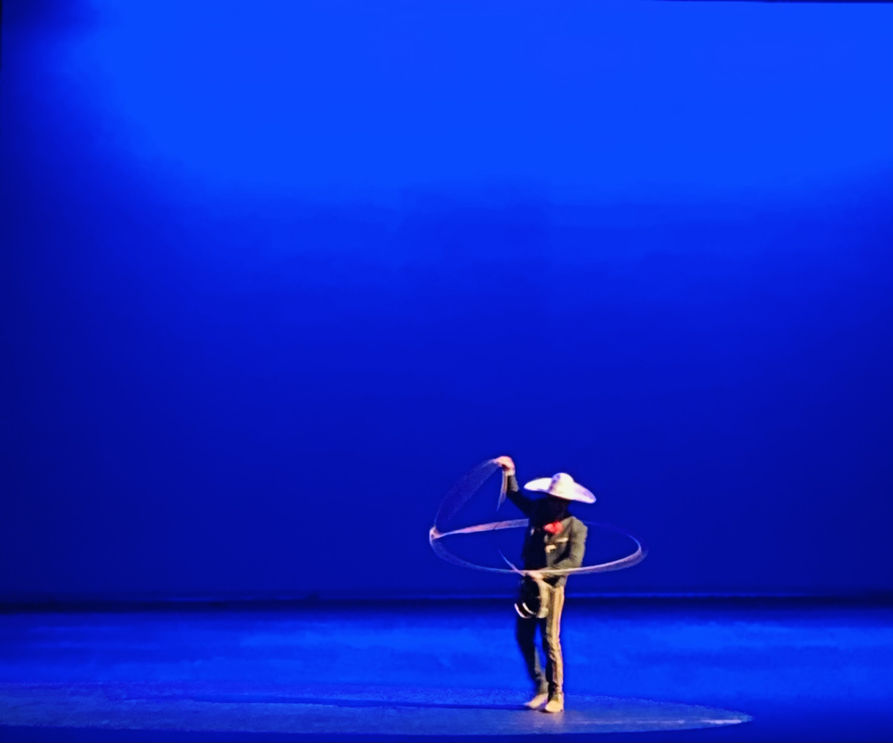

Animation / Illustration
Multimedia
Animation, illustration, and music as a design practice. Working outside the screen has shaped how I think about pacing, contrast, and what makes something feel intentional rather than assembled.
Mediums
Tools
Years
Motion

Character Study
A short animated sequence built around silhouette and colour separation — two figures reading clearly against a dark stage with almost no detail.
Visual Systems



Three visual directions explored for this site, each a complete colour and type system. The first one is what you're looking at.
Illustration & Photography

Untitled
Brush and line study working entirely in black and grey, pushing how much weight a single stroke can carry.

Stage
A single figure held in a field of blue, with light doing most of the composition.